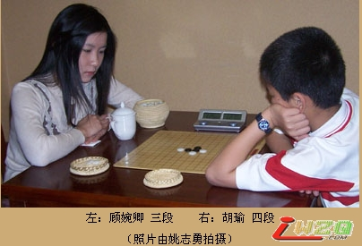
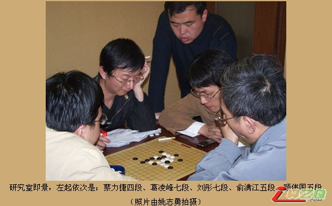
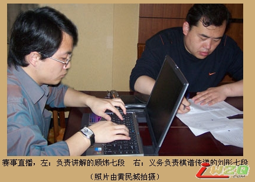
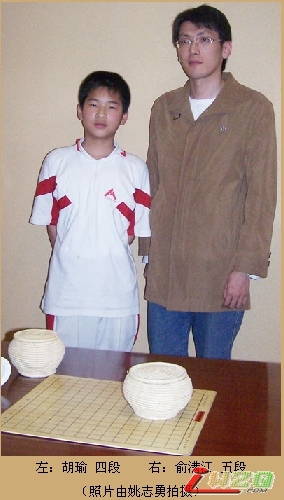
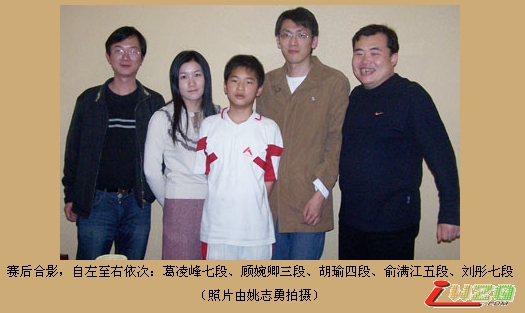

（上海消息 通讯员：百川）4月15日九时正，京沪连珠五子棋擂台赛第二场在光大国际会展中心大酒店对局室进行。上海队先锋顾婉卿三段设擂迎战北京队次锋胡瑜四段。

由于本次擂台赛攻擂方有权决定布局方，因此，北京小将胡瑜要求擂主顾婉卿开局。顾婉卿经过思考，布局松月。胡瑜提出交换后，顾婉卿留下了黑5必胜打点。全局的第一个焦点在黑11手。胡瑜没有按照目前已经公开的必胜点下，而是按照老定式行棋。结果，顾婉卿应对了必败的白12。全局的第2个焦点在黑15。胡瑜没有按照老变化行棋，而是简单往外一跳。观战室中北京队领队刘彤七段当即指出，这个属于黑必胜的手段，如无意外，结果应该可以明确了。顾婉卿在随后的白16早早下出弱防，此后草草应了几步就投子认负了。


至此，上海队与北京队打成平手。第三场次锋对次锋的较量，将于下月由北京小将胡瑜四段设擂迎接上海队次锋俞满江五段的挑战。

恰同学少年时
祝贺胡瑜同学获得全少赛男子少年组冠军